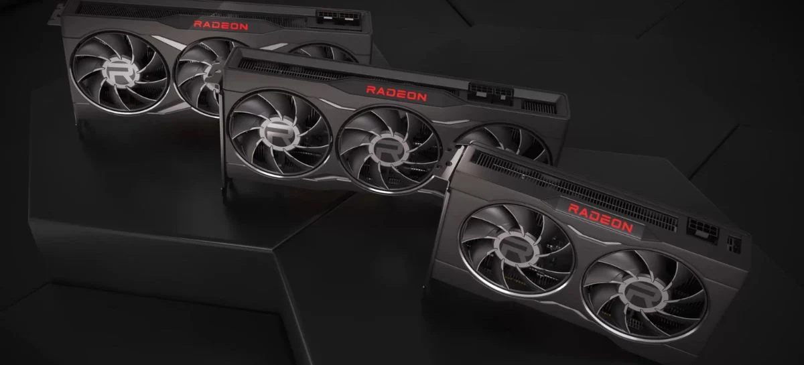
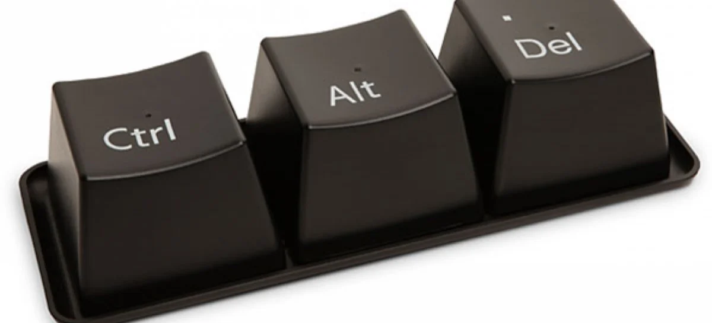
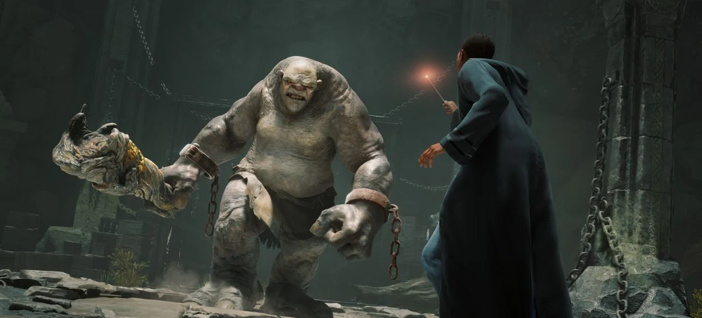

GAMES
NOTÍCIAS
PC GAMES
GPUs AMD Radeon RX 6000 tiveram aumento de desempenho em ray tracing com novo driver
Mas somente em benchmark sintético
Clique aqui para ver a notícia completa

MICROSOFT
NOTÍCIAS
WINDOWS
Windows 11: Barra de Tarefas terá atalho para encerrar programas
Chega de Ctrl+Alt+Del, a Microsoft fará alterações no Windows 11 para permitir que encerre programas e atividades em segundo plano em poucos botões
Clique aqui para ver a notícia completa

GAMES
NOTÍCIAS
PC GAMES
PLAYSTATION
XBOX
Hogwarts Legacy: diretor garante que "não existe planos" para DLC no momento
Foco no desenvolvimento foi em trazer o jogo base à vida
Clique aqui para ver a notícia completa